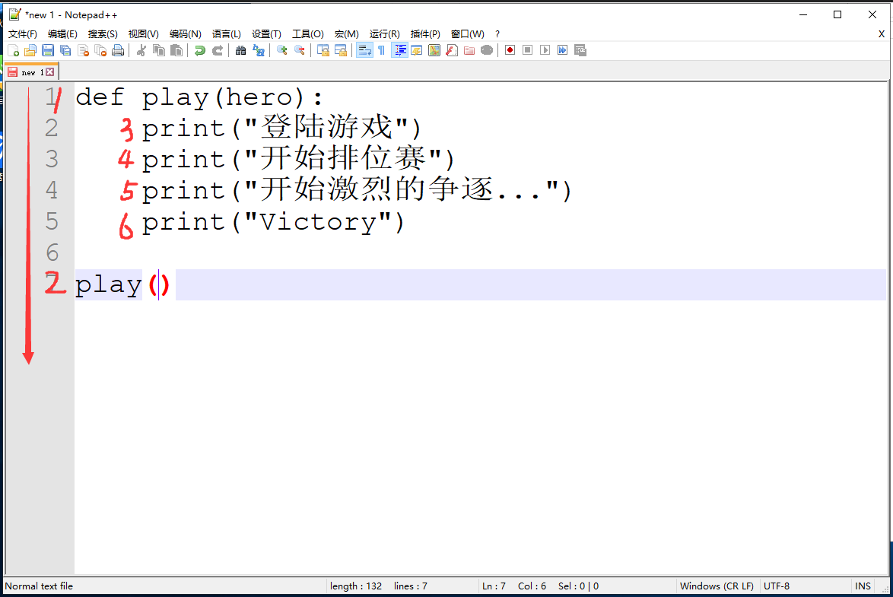
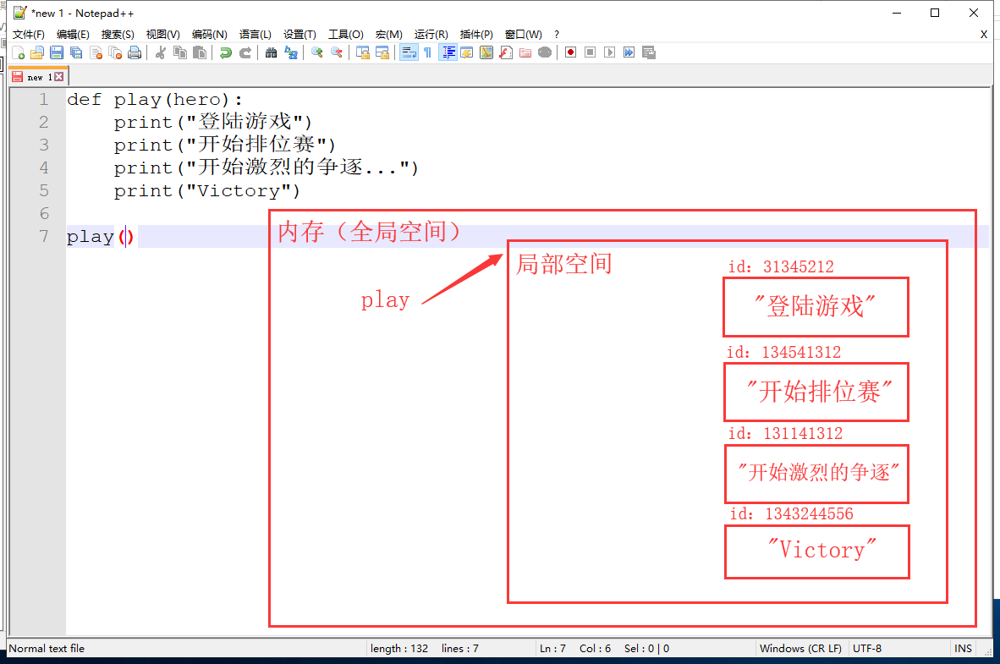
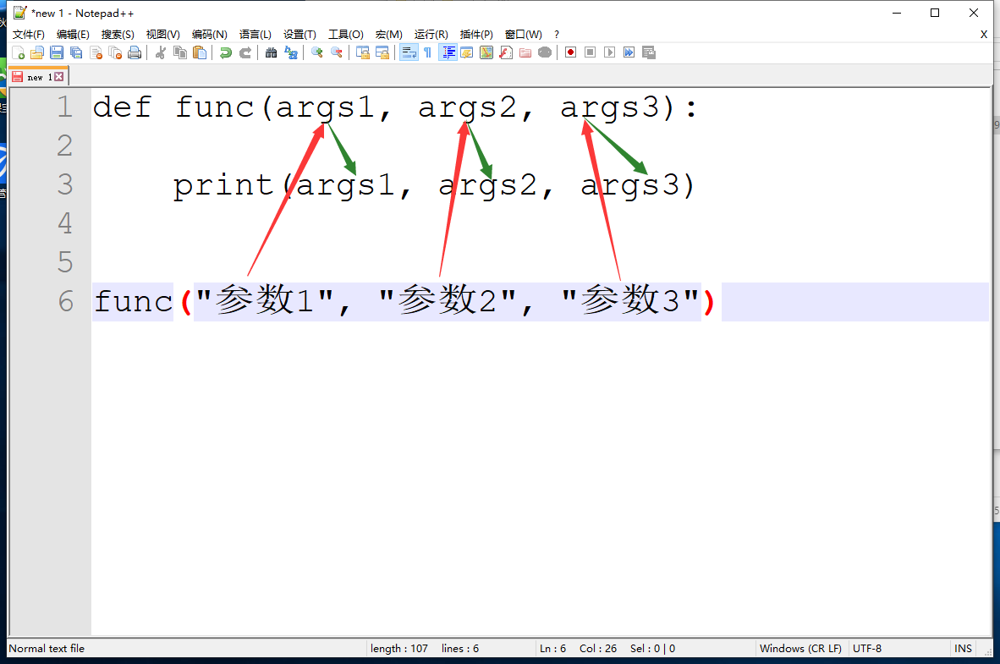

有一个需求，给出一个变量，计算变量的长度，要求不能使用len()
s = "郭老湿今天崩溃了，在后面直叹气"
count = 0
for i in s:
count += 1
print(count)我们利用上述一段代码完成了需求，很强666。但是问题来了，现在100个人每个人给你一个变量，让你计算变量的长度，此时只能苦逼的敲代码来计算！！！
s = ......
count = 0
for i in s:
count += 1
print(count)
lst = ......
count = 0
for i in lst:
count += 1
print(count)
tu = ......
count = 0
for i in tu:
count += 1
print(count)
......................我们发现一个问题，上述每一段代码有将近99%的内容完全一样，我们完全可以把这段代码提前写出来，等到使用的时候，拿过来用一下，解决了我们重复性的大问题，这就是函数的产生
def my_len(): # 这就是把我的代码封装成一个函数
count = 0
for i in s:
count += 1
print(count)
s = [1, 2, 3, 4, 5]
my_len()
s = "12345"
my_len()
......................函数可以为我们精简代码，把重复的内容封装起来，需要使用的时候调用就好了，同时加强了代码的重用性
定义函数的格式：
def 函数名():
函数体补充：定义变量时，开辟的内存空间、内存地址与变量名之间的关系
s = "zxd"
print(id("zxd")) # 2844747728632
print(s) 此时已经开辟了一块内存空间，同时产生内存地址，之后为了方便找到"zxd"，起一个外号为a，a也指向这个内存空间
print("zxd")
print(id("zxd")) # 2118956123896
# 单执行这句话时，开辟了一块内存空间，同时产生内存地址，但是这个就没有变量名，所以变量名可有可无，但内存地址是唯一的函数的调用就是使用之前预先定义好的函数
函数调用方法：函数名+()
def play():
print("登陆游戏")
print("开始排位赛")
print("开始激烈的争逐...")
print("Victory")
play() # 函数名+括号 就是函数调用函数执行顺序


为什么要有返回值？
返回值关键字：return
返回值可以将函数执行过程中产生的数据返回，也可以返回任意数据
如果函数没有return或者return后没有写值都默认返回None
返回值可以返回多个数据，以元组形式存储
返回值是函数执行时的最后一行代码，遇到return函数就结束了
返回值将数据返回给调用者
函数体中可以有多个返回值，但只执行一个
def func():
print("郭老湿没有买到沙发")
print("郭老湿很绝望")
print("郭老湿要离我们而去了")
return "郭老湿开卡车"
a = func() # 返回"郭老湿开卡车"函数名+()的全部作用：
看我们一段上面的代码
def play():
print("登陆游戏")
print("开始排位赛")
print("开始激烈的争逐...")
print("Victory")
play()
这是LOL大概的流程，但是我们忽略了一点，打排位得选英雄吧，那么此时我们需要填入一个参数来决定我们选择的英雄
def play(hero):
print("登陆游戏")
print("开始排位赛")
print("选择英雄", hero)
print("进入召唤师峡谷")
print("开始激烈的争逐...")
print("Victory")
play("卡莎")
而hero就是我们填入的参数，在函数执行的时候，我们传入的参数就会通过函数名传入到我们的函数体中，这有点类似我们的格式化输出，参数其实可以理解为一个占位符，通过函数调用时传进去，接下来我们来看看参数的分类
形参（形式参数）：函数定义时填入的参数
def play(game, hero, take): # 按照位置接收实参
print(f"登陆{game}")
print(f"选择角色:{hero}")
print(f"开始游戏:{take}")
print("结束游戏")
play("LOL", "卡莎", "发育、对线、打团")
play("DNF", "念皇", "刷深渊、打团")
def msg(name="zxd", age=23, sex="男"): # 默认值参数
dic = dict()
dic["name"] = name
dic["age"] = age
dic["sex"] = sex
return dic
print(msg()) # 默认值参数可以传也可以不传
def msg(name, age, sex="男"): # 混合参数
dic = dict()
dic["name"] = name
dic["age"] = age
dic["sex"] = sex
return dic
print(msg("zxd", 23))
实参（实际参数）：函数调用时填入的参数
def play(game, hero, take):
print(f"登陆{game}")
print(f"选择角色:{hero}")
print(f"开始游戏:{take}")
print("结束游戏")
play("LOL", "卡莎", "发育、对线、打团")
play("DNF", "念皇", "刷深渊、打团") # 按照位置接收实参
def play(game, hero, take):
print(f"登陆{game}")
print(f"选择角色:{hero}")
print(f"开始游戏:{take}")
print("结束游戏")
play(game="LOL", take="发育、对线、打团", hero="卡莎")
play(take="刷深渊、打团", game="DNF", hero="念皇") # 关键字参数
def play(game, hero, take):
print(f"登陆{game}")
print(f"选择角色:{hero}")
print(f"开始游戏:{take}")
print("结束游戏")
play("LOL", "卡莎", "发育、对线、打团")
play("DNF", "念皇", take="刷深渊、打团") # 混合参数
传参：传参就是实际参数传给形式参数的一个过程
